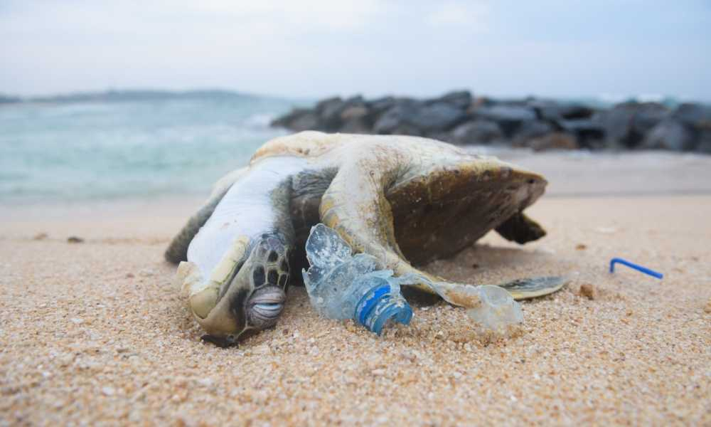

Ocean pollution is a growing issue, every day mankind produces more waste that ends up in the ocean. In fact, it should be mentioned that “each day, billions of gallons of sewage, pesticides, and industrial chemicals flow into the sea” (Stiefel). This is all on top of the plastic and other trash that is being produced and ending up in the ocean. All of these are contributing towards destroying the ecosystems within the ocean. Not only is it destroying the ecosystem, but it is also making the water unsafe for humans to be in. If this continues, it is possible that the ocean all together will become unfit for humans to be in, and ultimately destroy the ocean ecosystem. The effects of the ocean’s ecosystem being destroyed can be catastrophic on mankind, and the world in general.

Ocean pollution has taken great tolls on the sea animals. To further expand on this, “thousands of animals die each year because they mistake plastic trash for food or get entangled in it” (“Trash Art”). This is problematic for the ecosystem, as well for humans. Ocean pollution threatens endangered animals, as well as fish that humans consume. Oil spills often enough make the area around them uninhabitable for sea life, often enough killing the sea life that populate the areas already. On top of that, the plastic being consumed by sea life is inevitably going to kill them. And fish that consume plastic becomes unsafe for humans to consume, as well as other animals. Their predators will then be consuming any plastic materials that are in their prey, and the problem will continue. Not to mention that ocean pollution is affecting how many fish fishermen are catching, which can potentially cause a rise in fish prices. Fish that are infected by bacteria as a result of ocean pollution, such as sewage, might get humans sick as well. Between poaching and ocean pollution, it will only be a matter of time before these endangered sea creatures become extinct, and their absence can be seen on the ecosystem.
It should be mentioned that ocean pollution is creating a financial issue as well. Essentially, it was found that “plastic pollution in the world's oceans costs society up to $2.5 trillion a year” ("Study Puts Economic, Social Cost"). As a result of ocean pollution, taxpayers are finding that their money is being put towards this dilemma, which is preventing their money from being used on important matters. Rather than education or city improvements, their money has to go towards an issue that has been created by humans. It is sad that the issue has grown to this magnitude, and grown to be such a financial burden on society. And despite the efforts and money put in by the government to get rid of plastic, the problem only persists, and more plastic put into the ocean. The fact that more plastic is being put into the ocean only means that the government will have to continue to spend money to clean the ocean, when that money could be put to other uses to help benefit society in other ways. Due to society trashing the ocean, their money is having to be used on this man made issue that could have been prevented.